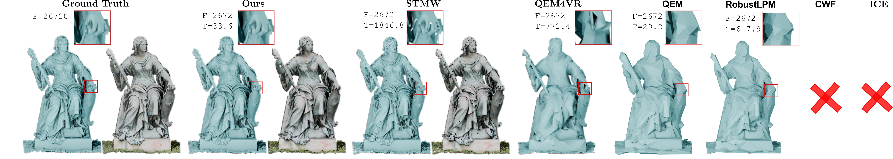
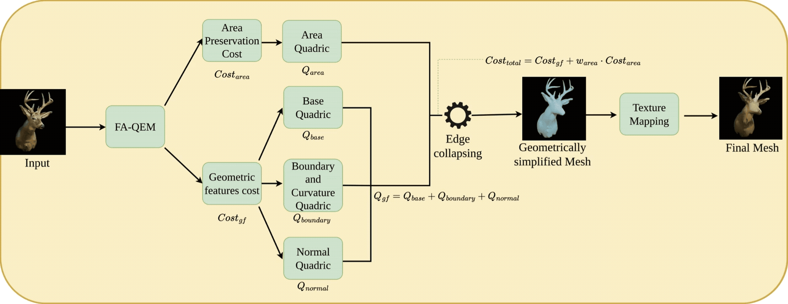

Fast and Robust Mesh Simplification for Generated and Real-World 3D Assets

Architecture & Pipeline

Abstract
The rapid growth of 3D content from modern reconstruction and generative pipelines, such as neural rendering and large-scale 3D asset generation, has led to an abundance of dense, noisy, and often non-manifold meshes. While these representations achieve high visual fidelity, their complexity poses significant challenges for downstream applications in simulation, AR/VR, and scientific computing, where efficient and reliable geometry is essential.
This necessitates mesh simplification methods that are not only fast and robust to "in-the-wild" inputs, but also capable of preserving fine geometric structures and high-quality appearance. In this paper, we propose Feature-Aware Quadric Error Metric (FA-QEM), a comprehensive mesh simplification pipeline designed for modern 3D assets. Our approach introduces a novel multi-term quadric error formulation that jointly encodes geometric deviation, boundary curvature, and surface normal consistency, enabling optimal vertex placement that preserves sharp features even under aggressive simplification.
Furthermore, we show that high-fidelity geometric simplification significantly improves downstream appearance transfer, serving as a superior front-end for texture mapping via successive mapping techniques. We conduct extensive evaluations on both AI-generated meshes and large-scale real-world datasets, including Thingi10K and the Real-World Textured Things dataset. Our results demonstrate that FA-QEM achieves consistently lower geometric error, better visual fidelity, and substantially faster runtimes compared to existing methods, while maintaining robustness across diverse and challenging inputs.
Qualitative Results (360° Showcases)
Below are short qualitative animations demonstrating our simplified textured meshes across various real-world and AI-generated assets:


Method Summary
- Unified Quadric Metric: Integrates an area-weighted base quadric, boundary/curvature preservation, and geometric normal stabilization to precisely guide vertex edge collapsing.
- Successive Texture Mapping: Reverses edge collapse history locally to transfer complex UV colors without suffering structural projection failures or texture bleeding.
- In-the-Wild Robustness: Native support for non-manifold edges, T-junctions, and virtual edge component-merging with topological check validation to prevent normal flips.
Citation
@misc{bhosikar2026fastrobustmeshsimplification,
title={Fast and Robust Mesh Simplification for Generated and Real-World 3D Assets},
author={Kunal Bhosikar and Preet Savalia and Lokender Tiwari and Brojeshwar Bhowmick},
year={2026},
eprint={2605.14029},
archivePrefix={arXiv},
primaryClass={cs.GR},
url={https://arxiv.org/abs/2605.14029},
}